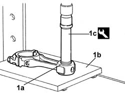
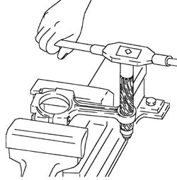

1028H58 CONNECTING ROD SMALL END BUSH - REPLACE
- Path
- Procedures > 10 ENGINE UNIT > 1028 PISTONS AND CONNECTING RODS > 1028H PISTONS AND CONNECTING RODS > 1028H58 CONNECTING ROD SMALL END BUSH - REPLACE
- Kind
- repair procedure (removal / refitting; the operation number is the code)
- Applies to
- engines: 2.8 JTD 8V; all production periods
- Interactive page
- https://sloeber94.github.io/elrnDB-fDct/en/#/244000691
Applies to: engines: 2.8 JTD 8V; all production periods
 Removing
Removing
 Refitting
Refitting1. Remove the bush (1a) from the small end using a hydraulic press, a suitable plate (1b) and the tool (1c).
 | Description | Code | Function |
|---|---|---|---|
1c | Fitting tool | 1.860.624.000 | Small end bush removal/introduction |

Applies to: engines: 2.8 JTD 8V; all production periods
Refitting
Removing1. Fit a new bush (1a) in the small end using a hydraulic press, a suitable plate (1b) and the tool (1c).
| Description | Code | Function |
|---|---|---|---|
1c | Fitting tool | 1.860.624.000 | Small end bush removal/introduction |
Applies to: engines: 2.8 JTD 8V; all production periods
- Ream the inner diameter of the small end bush to the recommended figure.
Subject | Value | |
|---|---|---|
. | Engine connecting rod small end bush | mm |
- | Inner diameter | 32,010 - 32,020 |
